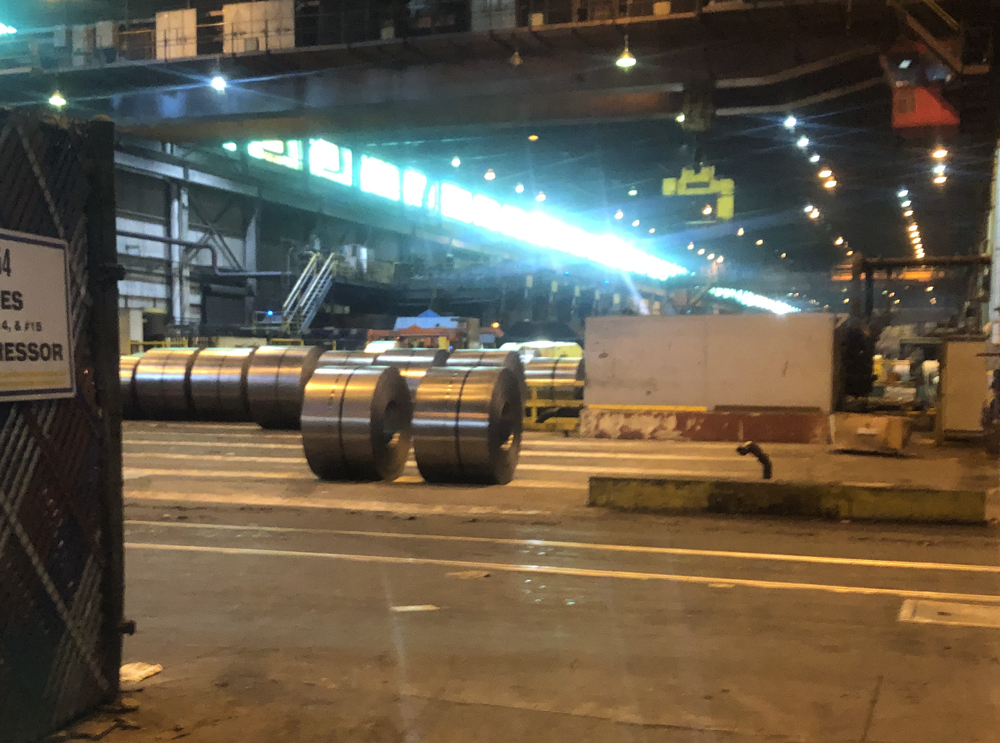
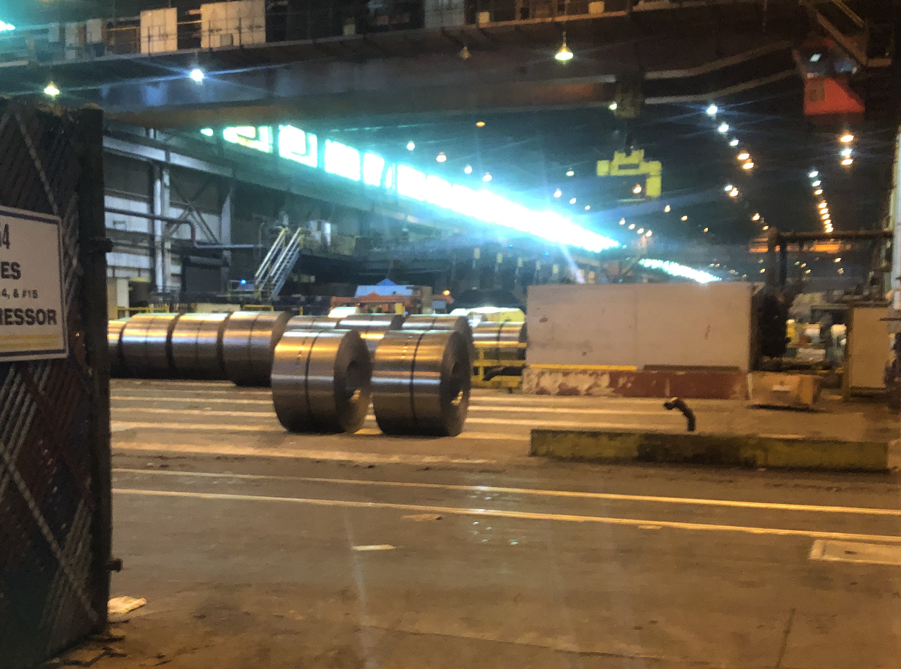
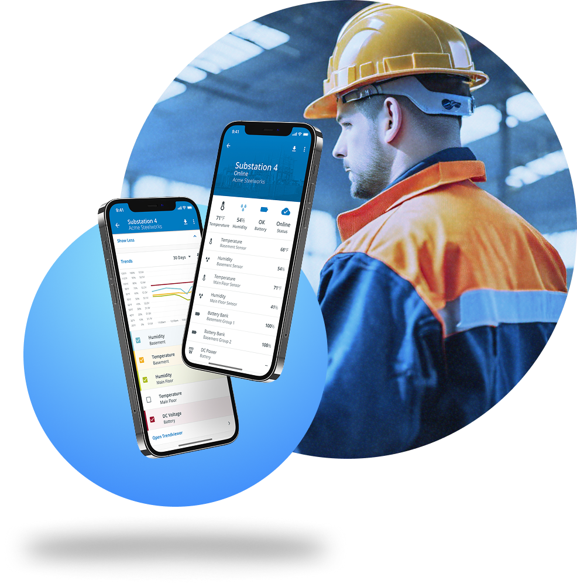
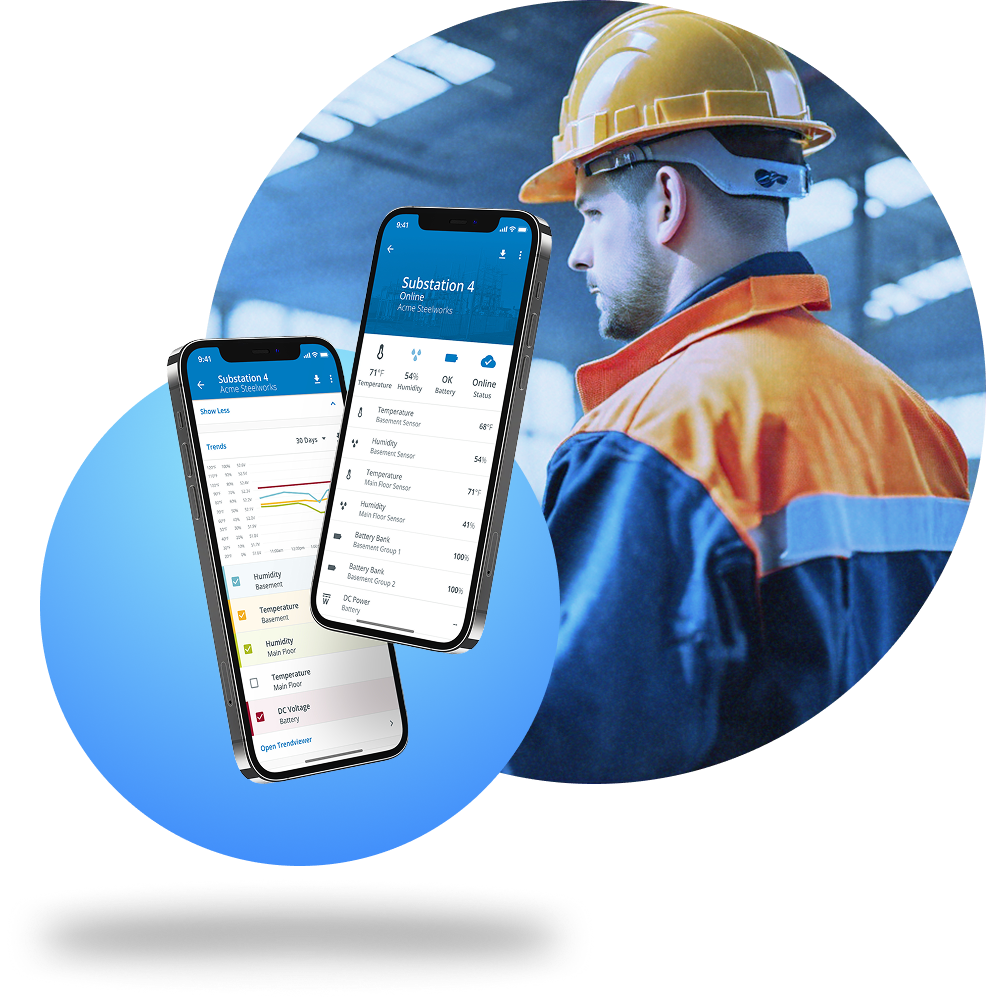

Human-Centered Research and Design
Experience and Opinions
I love observational interviews for new, hard subjects. I love interrogating analytics for decision making and incremental improvement.
Great products begin and end with understanding how people interact with the world around them and whatever it is being designed.
When Designers are hired in the Industrial and Manufacturing space, there's a much higher bar for figuring out how that space functions. It takes time to build a foundational knowledge of the daily work and goals these folks have, but it pays off in spades. Getting to the point where a design idea actually makes a dent depends on how much effort's been put into watching end users do their job, how they work with other people and make decisions. Observational research is the pre-requisite for any imagined alternatives to today.
Aggregating data on how people actually interact with these systems is, in my experience, a gauntlet of IT and security restrictions. Despite that, or maybe because of that, a ton of attention needs to be paid from the outset to ToS and preparing the system to passively gather whatever telemetry it can. At Hexagon, I created a mini-site to catalog some of these options for SaaS apps along the development journey.
Story 1: There are monsters everywhere
 

 

The sheer scale of a 9-square mile steel plant makes it impossible to build a quick mental map. I have no idea which of the stadium-sized, rusting structures surrounding us is "Roller Hall 2." But our host is a seasoned Ops Manager who's been getting his steps in on the dusty acreage of the plant for a couple dozen years. He knows it like his backyard. Leading a small group of 2 Application Engineers and 2 Designers, he trods up an ancient metal staircase. We're in Roller Hall 2, a stadium-sized, hot, blaringly loud structure where tons of steel get rolled every day and through the night. As we hustle up the stairs he exalts the emergency alarm system, a system of Crouse-Hinds lights up on 40-foot poles, a few visible across the rolling hall. We turn the corner to see a row of 80-year old Eaton switches. Nearby, a rusted hole the size of a small car in the side or the building lets in a welcome breeze. Shrugging at the dilapidated outlay and explains, 'There's monsters everywhere.'
Our team is here to build an early-alert system for fragile points of failure in harsh & hazardous campuses. In this case, we were focused on power substations and breaker rooms.
We did about 9 visits to different steel mills just like this, and production facilities and our own factories to test out how people responded to notifications.
So when we went to design our award-winning app, we already had a handle on what we needed to deliver:
Learnings that led us to an Award-Winning App
- There would be people getting alerts on their phone, and they often would just text each other to get responses done fast. No ERP. So prioritizing copy pastable content.
- There's a big room in almost all of these places, a 'Control Center', where the app could be up on a 50' monitor. We'd need to plan for that.
- False alarms would kill the prospect. So we need a way to quickly ID those and silence or correct them.
- The map feature was cool but actually didn't provide much value to the folks on the ground on their phone since there's about 20 substations max and they know where they are.
- But the map feature on the big screen was cool.
We learned a lot more too.
And we did this by having really strong support from sales (application engineers in this case).
These types of monitoring systems rely on quality of data and types of data. We partnered with WellAware, a startup in Houston measuring flow and volumes of fluids, this also expanded what our app could do. Going on site with the WellAware team was enlightening, because we started including the actual set up of the sensors as part of the service design.